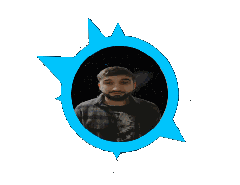
Entrar al Escritorio Virtual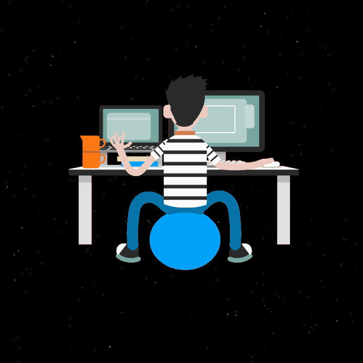
Emanuel Rodriguez
Entrar al Escritorio Virtual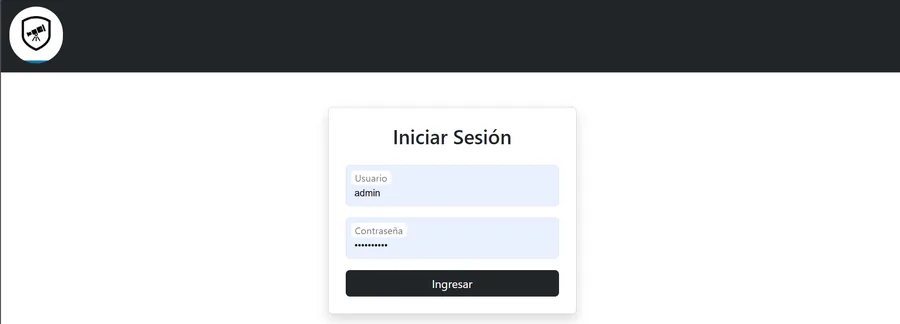
Plataforma para centralizar el inventario astronómico, los préstamos a socios y la planificación de observaciones. Reúne en un mismo flujo la consulta de equipos disponibles, el seguimiento de préstamos y el registro de objetos celestes observados.
Ver detalles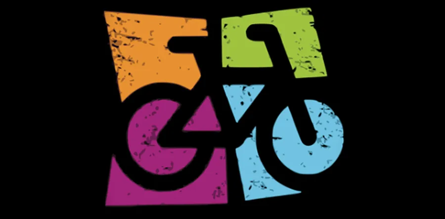
Aplicación de consola que organiza el inventario de bicicletas y concentra la lógica para consultar y administrar sus registros. Proyecto académico enfocado en estructurar datos y resolver las operaciones principales desde Java.
Ver detalles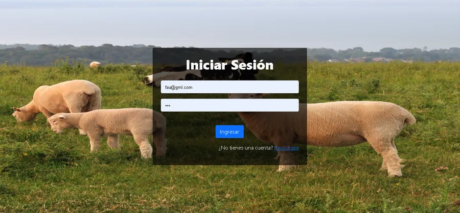
Aplicación web para organizar la administración de una estancia rural con acceso diferenciado para capataz y peón. La separación de perfiles permite adaptar el acceso a las tareas de cada usuario dentro del sistema.
Ver detalles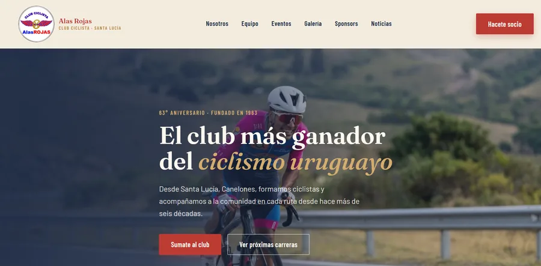
Sitio institucional del Club Ciclista Alas Rojas, creado para presentar su historia, actividades y plantel, además de dar visibilidad a sus sponsors. La información está organizada para que socios, seguidores y visitantes puedan conocer el club desde distintos dispositivos.
Ver detalles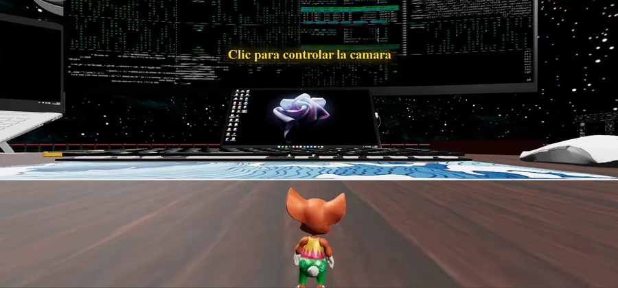
Experiencia interactiva en 3D construida con React y Three.js. Permite explorar un escritorio virtual y manipular objetos en el espacio, combinando una interfaz web con una escena tridimensional.
Ver detalles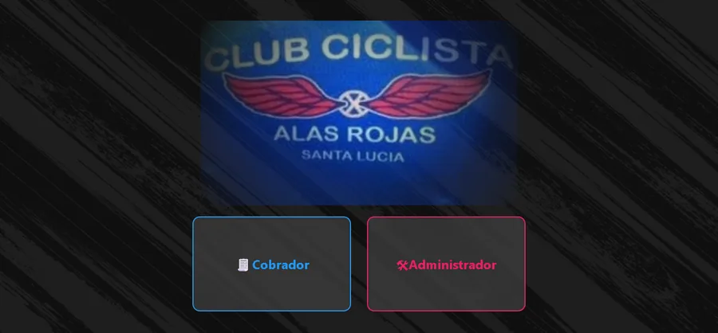
Sistema para gestionar la información de los socios del Club Alas Rojas y reducir tareas administrativas manuales. Cuenta con una interfaz en React conectada a un backend en Node.js y una base de datos PostgreSQL.
Ver detalles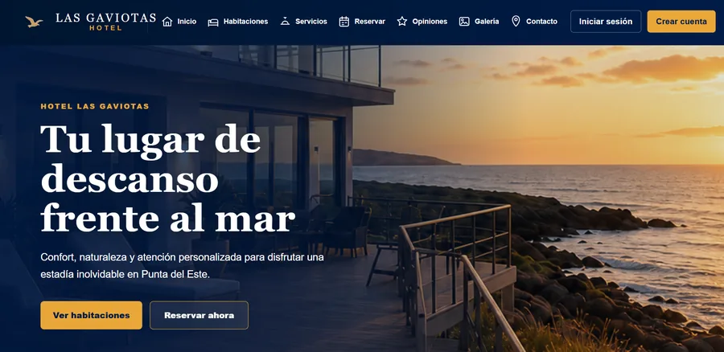
Sistema web para administrar el ciclo de reservas de un hotel: gestiona usuarios y habitaciones, registra estadías y permite comprobar la disponibilidad. Incluye autenticación y roles, cálculo de noches y persistencia local de datos, con pruebas automatizadas para la lógica principal.
Ver detalles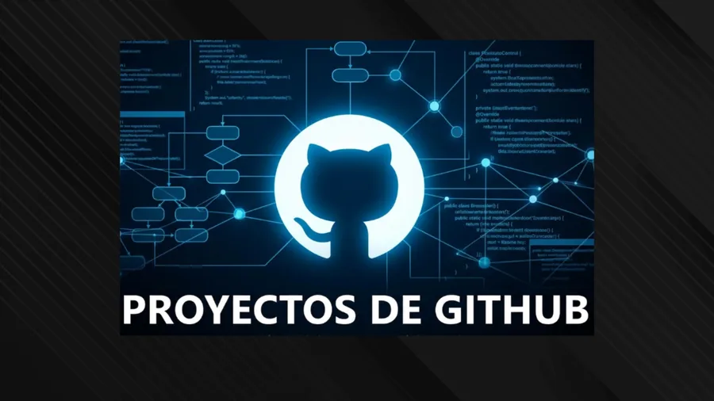
Selección de repositorios que muestra distintos ejercicios y proyectos de desarrollo, desde lógica de frontend y backend hasta modelado y consultas de bases de datos. Algunos se centran en la lógica y no incluyen una interfaz gráfica.
Ver detalles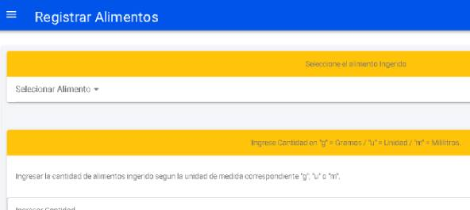
Aplicación móvil para registrar alimentos consumidos durante el día y consultar el seguimiento de calorías. Desarrollada con Ionic y JavaScript, se conecta a una API provista por la institución educativa.
Ver detalles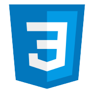
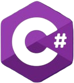
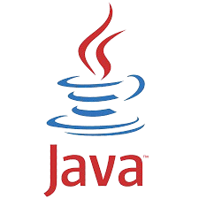
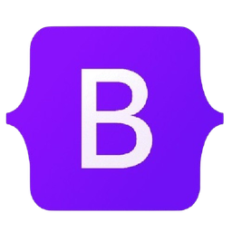
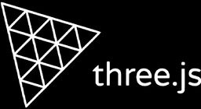
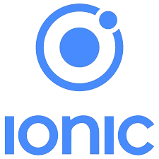
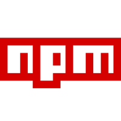
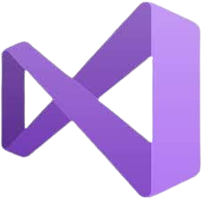
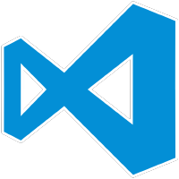
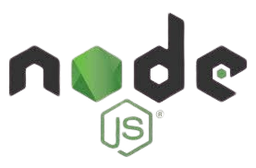
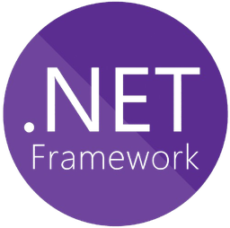
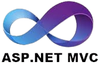
¡Hola! Soy Emanuel Rodriguez.
Hace más de cinco años comencé mi camino en la tecnología, empezando de forma autodidacta y dedicando muchas horas a practicar lógica y resolver problemas. En ese proceso cursé el programa Jóvenes a Programar, orientado a Testing, una experiencia que fortaleció mis bases y despertó aún más mi interés por el desarrollo de software.
Con el tiempo, esa curiosidad se transformó en una decisión profesional.
Actualmente estudio Tecnologías de la Información en UTEC y soy Analista Programador (título intermedio, Universidad ORT). Combino mi formación académica con práctica constante, desarrollando proyectos que me permiten seguir mejorando y consolidar mis conocimientos.
Me interesa formar parte de un equipo donde pueda aportar, aprender de profesionales con experiencia y seguir creciendo dentro del mundo IT. Me considero una persona responsable, analítica y comprometida con el trabajo bien hecho.
Estoy en búsqueda de mi primera oportunidad profesional en el área, con muchas ganas de sumar valor y seguir desarrollándome.
¿Tienes un proyecto, una oportunidad o una idea que quieras llevar más lejos? Me gustaría conocerla.